List View of Inventory Moves
You can see that created products is displayed in list view.

This Odoo apps use to cancel the MO after being done and again set it to "Draft" also update the quantity.This Odoo apps is useful for reverse complete MO when needed or any mistake done on manufacturing/production Order. This Odoo apps also manage proper reverse workflow for lot and serial number for raw materials and finished goods. so if you are managing your products with lot or serial number tracking then don't worry this module take care of everything for reserve stock movement and quant calculation generated from the finished production order. If any accounting entry/journal entry transaction created from the Manufacturing order(With inventory valuation automated) those created journal entry is also deleted when you cancel the done manufacturing/production order on Odoo ERP system.
Inventory/Product Moves
Creation of Manufacturing Order
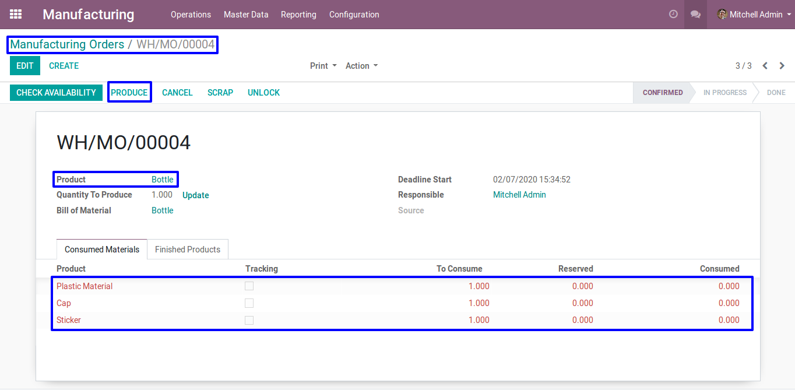
When you produce the manufacturing order, inventory moves is created.
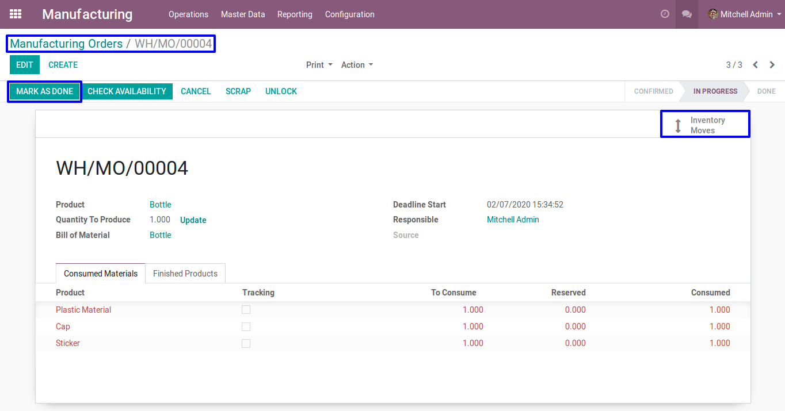List View of Inventory Moves
You can see that created products is displayed in list view.
Cancel button of Manufacturing Order
You can see cancel button available now on the done state of manufacturing order. If you cancel manufacturing order then stock quant related to that manufacturing order get effected.
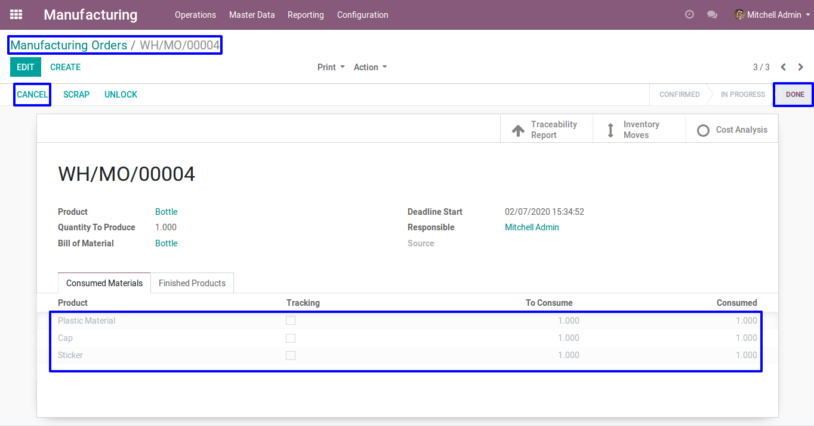Cancelled Manufacturing Order
When manufacturing order get cancelled that time inventory moves will be automatically deleted.
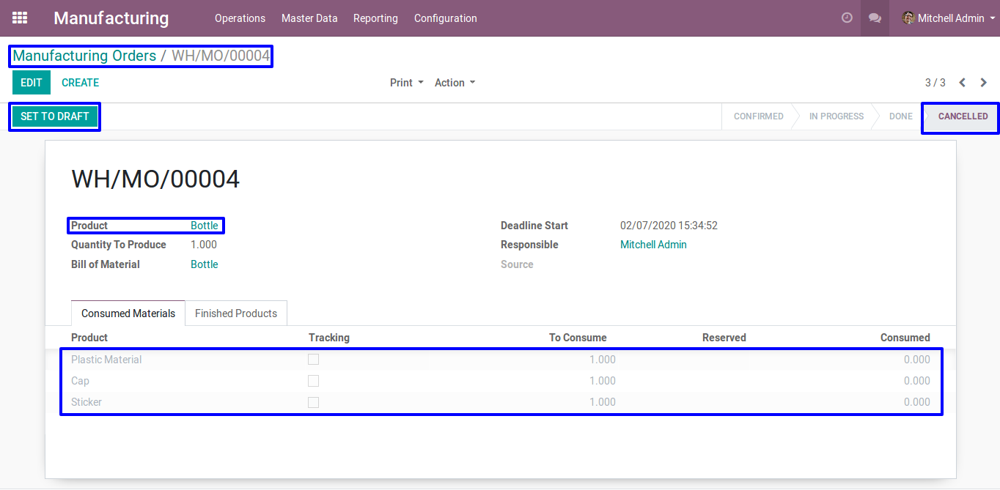 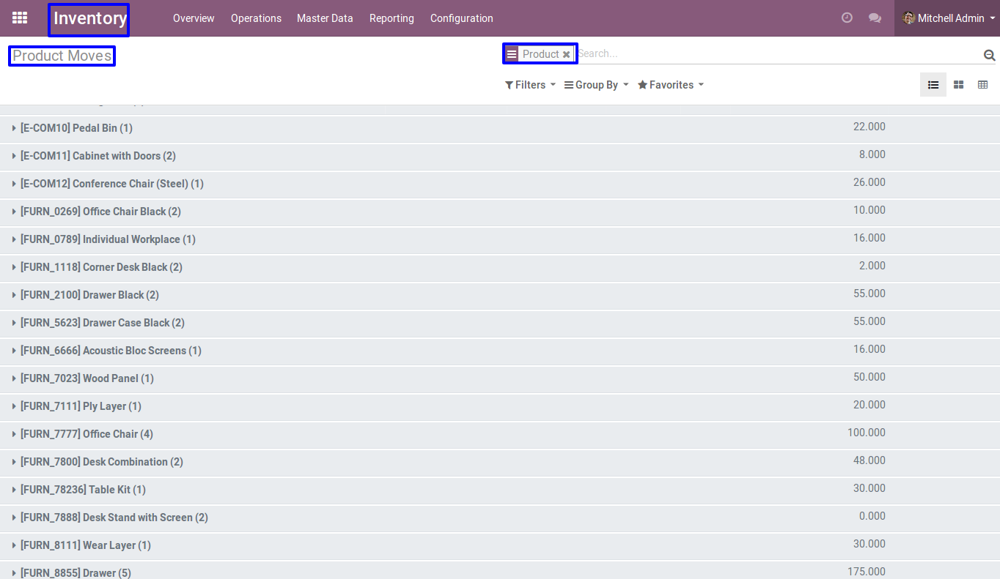Accounting Journal Entries
Creation of Manufacturing Order
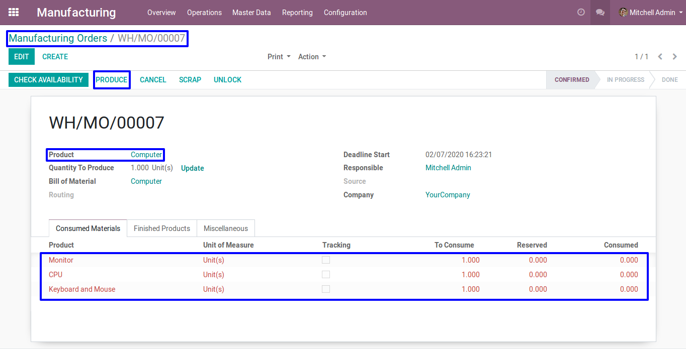In product category select inventory valuation is 'Automated' so that journal entry will be created.
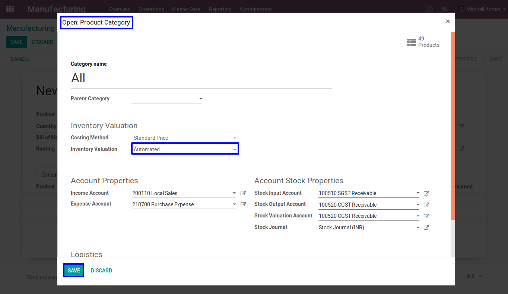Done Manufacturing Order
When you done the manufacturing order, you can see the account journal entry will be automatically created.
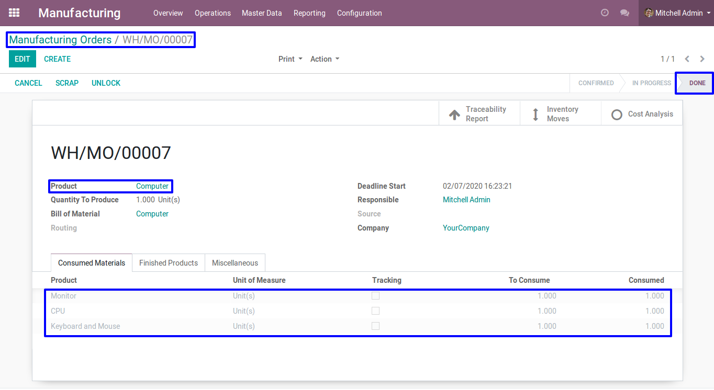 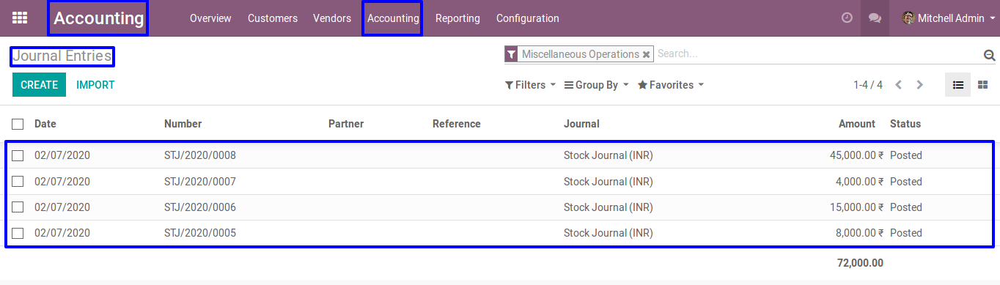Cancel button of Manufacturing Order
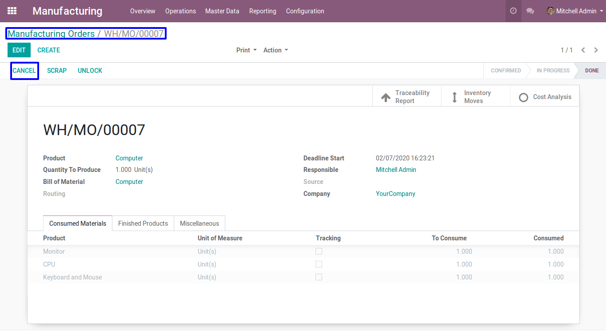Cancelled Manufacturing Order
When manufacturing order get cancelled that time journal entry will be automatically deleted.
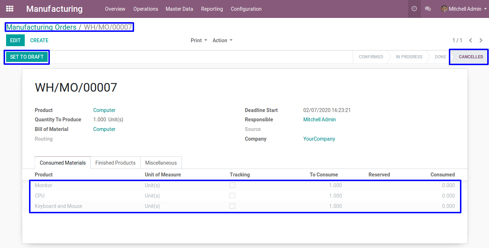 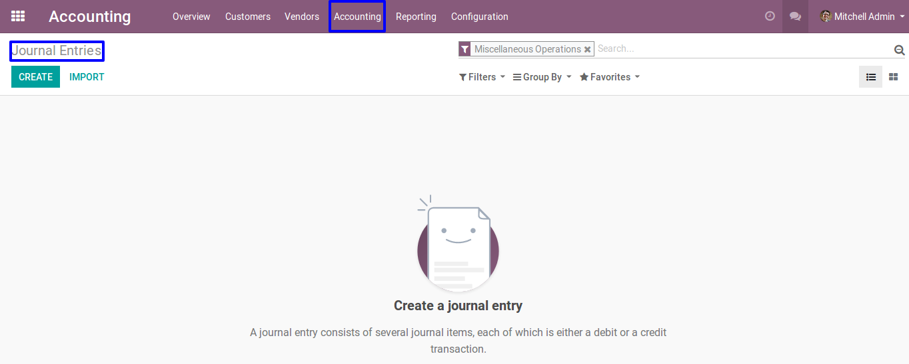Most Demanded Apps


At BrowseInfo we offer end to end solution for Odoo services. Which includes analysis & consultation on the workflows and integration part. Please note that You're not allowed to distribute this module after purchase! Incase of any question regarding this module feel free to email us on ticket@browseinfo.in or raise a ticket on support.